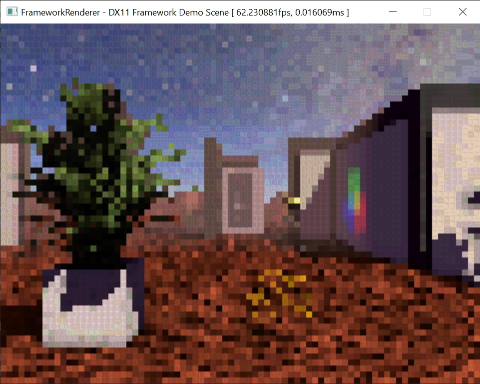
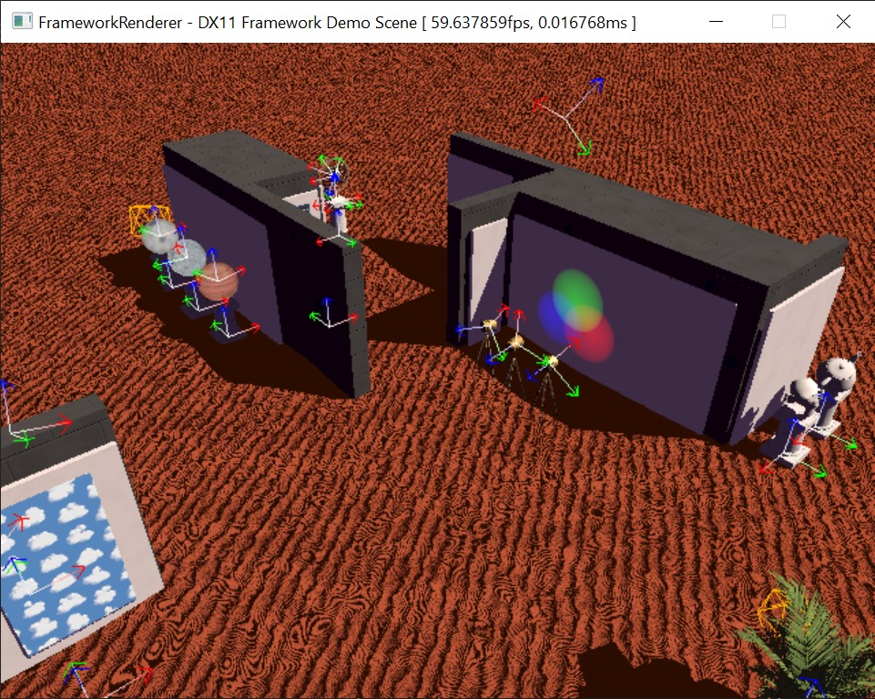
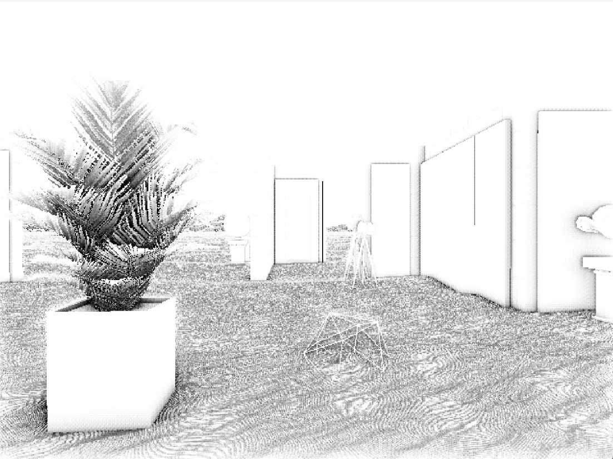

this is a DirectX 11-powered rendering engine built in C++. i developed this for the realtime graphics module in my second year at Uni. i then built on it in the physics simulation module after that, extending it to include a simple physics engine too. i'll only focus on the graphics element here.

demo scene
i really went above and beyond to implement a few interesting rendering techniques with this project. as well as the basic stuff of mesh rendering, point/spot/directional lights, here's a summary of some of the more interesting techniques:
masked transparency
PBR uber-shader with roughness and metallic inputs
post-processing and G-buffer access
SSAO
shadow mapping
normal maps
i also implemented an object/transform heirarchy, resource management system, and JSON scene deserialisation.
i made sure to implement a few useful small things as well, such as window resizing, sorting of objects according to mesh and shader (to reduce context switches), and a debug view mode with axes and bounding boxes.

gizmos in debug mode
i made the demo scene in Blender (as usual) then brought the result over as individual models, textures, and materials, and reconstructed it in the engine. it's vaguely inspired by the surreal artworks of de Chirico.
the post-processing shader has a uniform which allows it to be configured to several different modes - stylised post-process; colour buffer only; normal buffer; depth buffer; sharpen; SSAO.
the stylised mode features SSAO, sharpen, depth fog, and an ASCII shader overlay. it also adds a skybox background.
walkthrough demo video
the shadow mapping works by performing a depth-only render of the objects in the scene, from the perspective of each light. these textures are then bound by the object shaders in the main pass, and for each light, the world position of the pixel will be compared to the reprojected depth buffer value from the shadow texture, and the pixel will be lit or shaded accordingly.
this is a very simple, cheap technique, but has limited resolution (often resulting in blocky shadows) and limited area of coverage for directional/sun lights.
one thing i found quite challenging with this project was normal mapping. this involved extending my mesh loader to calculate tangents and bitangents, which was quite hard, on top of correctly bending normals in the shader based on the normal map.
i'm quite pleased with my SSAO implementation. it's quite a cheap shader, and a very useful/common effect to have. my implementation doesn't have any anti-aliasing, which could definitely be improved. i could also play with the random direction function to alter the dithering pattern to improve it.

one thing i didn't implement fully was frustrum culling. i just never got this working correctly with all the possible cases of object AABBs intersecting the camera frustrum.
it was quite fun learning DX11, and definitely simpler than Vulkan, which allowed me to focus on the actual graphics techniques more than just using the API.
 gizmos in debug mode
gizmos in debug mode